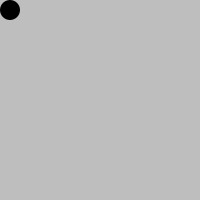
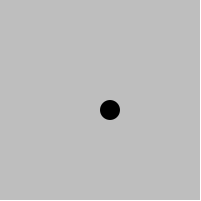

Takdim
Merhaba,
DiTiB Bonn bünyesinde sunduğumuz DiTiB Yazılım Kampı sayfasını görüntülemektesiniz. Bu sayfada eğitim içeriği ve kullandığımız materyaller hakkında bilgiler bulabilirsiniz.
Derslerimiz programlama öğrenmek isteyen herkese açık ve ücretsizdir. 12-20 yaş arası gençleri özellikle bekliyoruz. Derslere katılmak için herhangibir programlama bilgisi gerekmemektedir.
Dersler
Derslerimiz Çarşamba günleri saat 18:00'da, DiTiB Bonn Merkez Camii Eğitim Merkezi E-1 nolu derslikte yapılmaktadır.
Derslere gelirken kağıt kalem getirmeniz yeterlidir. Varsa laptop ya da klavyesi olan bir tablet de getirebilirsiniz.
Kaynaklar & Materyaller
Ders süresince aşağıdaki materyal ve kaynaklardan faydalanıyor olacağız. Tüm bu kaynaklar, alanlarında yetkin araştırmacılar tarafından geliştirilmiş ve siz öğrencilerin kullanımına ücretsiz olarak sunulmuştur:
- Programlama dili: Racket
- Geliştirme ortamı: DrRacket
- Kitap: Schreibe Dein Programm!
- Eğitim videoları: Informatik I - Database Systems Research Group at U Tübingen
- Racket dokümantasyonu: Dokümantasyon
- Almanca dökümantasyon: Sprachebenen und Material zu Schreibe Dein Programm!
Ders 1
Bu dersimizde;
- DrRacket kurulumu ve ayarları
- Sayılar, metinler, resimler ile hesaplamalar
defineile isimlendirmelambdaile fonksiyon tanımlama
konularını çalışacağız. Haydi başlayalım...
Ders Notları
DrRacket: Kurulum ve Ayarlar
İlk olarak aşağıdaki bağlantıyı kullanarak DrRacket programını indirelim, kuralım ve ayarlarını yapalım:
https://download.racket-lang.org/
DrRacket istenirse Almanca olarak da kullanılabilir.
Help > Deutsche Benützeroberflache für DrRacket > In Ordnung - Beenden
Bu ayarı yaptıktan sonra DrRacket programını yeniden başlatmanız gerekmektedir.
DrRacket, programlamaya giriş eğitimini kolaylaştırmak için bizlere yardımcı diller ve eğitim paketleri sunar. Şimdi bu ayarları yapalım:
Language > Choose Language > Die Macht der Abstraktion - Anfänger
Language > Add Teachpack > Image2.ss
Dil ve eğitim paketi seçtikten sonra Run tuşuna basarak yaptığımız değişiklikleri kullanıma alalım.
DrRacket 2 ayrı pencereden oluşur. Bunlar Definition Window (Tanımlama Penceresi) ve Interaktion Window (Etkileşim Penceresi) olarak adlandırılır.
Etkileşim penceresini kullanarak Racket dilini tanımaya başlayalım.
Basit Hesaplamalar
Etkileşim penceresini bir hesap makinası gibi düşünebilirsiniz. Haydi ona basit bir şeyler soralım:
42
Ya da:
3.141592653
Daha karışık bir soru:
(+ 40 2)
Yukarıda farkında olmadan ilk fonksiyon çağırımınızı yapmış oldunuz. + fonksiyonun adı, 40 ve 2 parametreleri.
Kural: Fonksiyonlar parantez içinde yazılır.
Kural: Fonksiyon adı parametrelerden önce yazılır. (Prefix Notation)
Kural: Fonksiyon adı ve parameteleri arasına boşluk karakteri yazılır. (function argument1 argument2 argument3 ...)
Daha Karmaşık Hesaplamalar
İç içe geçmiş, daha kompleks sorular da sorabiliriz.
(odd? (+ 40 2))
(+ (+ 20 20) (+ 1 1))
Kural: Hesaplar içeriden dışarıya doğru yapılır. En önce en içteki parantezin değeri hesaplanır. Daha sonra çıkan sonuç ile hesaba devam edilir.
Birlikte hasaplayalım:
5 + 10 / 2 - 2 * 4
Matematikte kural olarak çarpma ve bölme işlemi toplama ve çıkarmadan önce yapılır:
5 + (10 / 2) - (2 * 4)
Yukarıdaki hesaplamayı Racket dilinde yazmak istersek:
(- (+ 5 (/ 10 2)) (* 2 4)) # ya da
(* 5 (- (/ 10 2) (* 2 4)))
Sadece Sayılar mı var?
Racket dilinin yapı taşları arasında sayılardan başka türler de var.
Mesela aşağıdaki bir string (Metin):
"Fatih"
odd ingilizce de tek sayıları ifade etmek için kullanılıyor. odd? fonksiyonu ise Racket dilinde eğer verilen sayı tek ise #t (True: yani doğru), çift ise #f (False: yani yanlış) değerini dönüyor. #t ve #f değerlerini boolean (mantıksal değerler) denir.
(odd? 42)
Racket'da bulabileceğiniz bir başka değer ise image (Resim). Aşağıdaki ifadeyi çalıştırırsanız size 50 yarıçapında, içi dolu, kırmızı bir daire resmi üretir.
(circle 50 "solid" "red")
İPUCU: DrRacket etkileşim penceresinde
ESC+Ptus kombinasyonu ile en son yazdığınız satırı geri çağırabilirsiniz.
İşte bunlara Literals (Literale) ya da Constants diyoruz. Yani Yapıtaşları. En basit değerler. Daha fazla basitleştirilemezler.
| Literal | Signature | |
|---|---|---|
| #t #f | Mantıksal değerler (doğru, yanlış) | boolean |
| "Fatih" "x" " " | Yazı | string |
| 0 1983 -42 007 | Tam Sayılar | integer |
| 0.42 3.1415 -273.15 | Virgüllü sayılar | rational |
| ✰ | Resimler | image |
String turunu kullanarak da hesaplamalar yapabiliriz:
(string-append "Merhaba" "Fatih")
(string-append "Merhaba" " " "Fatih")
(string-length "Fatih")
(string->number "42")
Ya da resim kullanarak:
(circle 20 "solid" "red")
(rectangle 100 50 "outline" "blue")
(star 50 "solid" "red")
(above (circle 20 "solid" "red") (rectangle 100 50 "solid" "blue"))
(överlay (circle 30 "solid" "red") (rectangle 200 100 "outline" "black"))
Bknz: circle, rectangle, above, overlay, overlay/xy
İfadelerin İsimlendirilmesi: define
Yazdığımız ifadelere bir isim vererek onları daha sonra kullanabiliriz:
(define pi 3.141592653)
(define fatih-tel "+49 111222333")
(define mavi-daire (circle 100 "solid" "blue"))
(define gün-dakika (* 24 60))
(define ... ...) özel bir form. Bu form hesaplanan bir şey değil, bir efekti var. İkinci parametredeki ifadeyi birinci parametredeki isme bağlıyor.
(define isim ifade)
Kural: isimler ( ) [ ] { } " , ' ` ; # | \ karakterleri ile başlayamaz.
Kural: isimler bir sayı ile eşit olamaz
Kural: İsimler space, tab, return karakterleri içeremez.
Kural: daha önce başka bir değere bağlanmış olmamalı.
Kural: Büyük/küçük karakter farketmiyor.
Aşağıdaki örneğin yukarıdaki kurallara uyup uymadığına inceleyelim:
(define eu->us$ 1.02)
Alıştırmalar
Şimdiye kadar öğrendiklerimizi kullanarak Almanya'nın bayrağını yapmaya çalışalım. Siyah, kırmızı ve altın rengi olmak üzere 3 tane dikdörtgene ihtiyacımız var. Bunları üst üste koyarsak oldu demektir:
(define siyah-dikdortgen (rectangle 500 100 "solid" "black"))
(define kirmizi-dikdortgen (rectangle 500 100 "solid" "red"))
(define altin-dikdortgen (rectangle 500 100 "solid" "gold"))
(define alman-bayragi (above siyah-dikdortgen kirmizi-dikdortgen altin-dikdortgen))
Bu tanımlamaları yaptıktan sonra alman-bayragi isimli ifadeyi çalıştırırsak sonucu görebiliriz:
alman-bayrağı
Fonksiyonlar (Prosedürler): lambda
Şimdi birlikte elektrik faturamızı hesaplayabilmek için bir formül yazalım. Benim kullandığım elektrik şirketinin fiyatlandırma kuralı şu şekilde:
Kullanım Bedeli (Arbeitspreis) = 17,45 ct/kWh
Taban Fiyat (Grundpreis) = 10,16 €/Monat
Bu şirket taban fiyat olarak aylık 10,16 Euro alıyor. Bunun üzerine kullandığımız her kWh elektrik için 17.45 Cents ödüyoruz. Matematiksel olarak ifade etmek gerekirse;
Aylık Fatura = 10.16 + ((17.45 * KULLANIM-MIKTARI) / 100))
Örneğin, aylık 350 kWh elektrik kullanıldığında;
17.45 * 350 = 6107.5 Cents
6107.5 Cents / 100 = 61.075 Euro
61.075 + 10.16 = 71.235 Euro
Bunu Racket dilinde yazalım:
(+ 10.16 (/ (* 17.45 KULLANIM-MIKTARI) 100))
Bu ifadeyi bu çalıştırabilmek için KULLANIM-MIKTARI yazan yere gerçek değerler vermemiz gerekecek. Örneğin, yine 350 kWh elektrik kullanıldığını varsayarsak:
(+ 10.16 (/ (* 17.45 350) 100))
... sonucun 71.235 olduğunu görebiliriz.
Peki bu ifadeyi içinde değişken olacak şekilde kullanmak istesek? Yani kullanılan elektrik miktarı değiştikçe hesaplayabilen bir fonksiyon yazmak istesek. lambda fonksiyonu tam da bu iş için var:
(lambda ... ...)
lambda birinci parametrede verdiğimiz değişken isimlerini ikinci parametredeki ifadece yerine koyarak bize bir fonksiyon (prosedür) geri döner.
(lambda (x) (+ x 1))
Üretilen bu fonksiyona define kullanrak bir isim verebiliriz.
(define bir-ekle (lambda (x) (+ x 1)))
Örneğimize geri dönecek olursak:
(define fatura-hesapla
(lambda (x)
(+ 10.16 (/ (* 17.45 x) 100))))
Ev Ödevi
Racket dili tarafından tanımlanmış circle, rectangle, start, overlay ve overlay/xy gibi fonksiyonları kullanarak Türk Bayrağımızı çizebilir misiniz?
Kaynaklar
Bu dersi daha iyi anlayabilmek için aşağıdaki kaynaklardan faydalanabilirsiniz:
- Kitap (Almanca): Schreibe Dein Programm! Sayfa 40'a kadar.
- Video (Almanca): DrRacket, REPL, Auswertung, Literale, komplexe Ausdrucke
- Video (Almanca): Spezialform define, İdentifier, Definitionsfenster
- Video (Almanca): Lambda-Abstraktion, Funktionsdefinition, Applikation
Ders 2
Bu dersimizde problem çözerken bize yardımcı olan Tasarım Reçetesi'ni öğrenecek ve onu kullanarak yeni fonksiyonlar tanımlayacağız.
Haydi başlayalım...
Ders Notları
;; Açıklama
;; Verilen sayının karesini hesaplar
;; Sözleşme
(: karesi (integer -> integer))
;; Testler
(check-expect (karesi 0) 0)
(check-expect (karesi 2) 4)
(check-expect (karesi -3) 9)
;; Kod
(define karesi
(lambda (x)
(* x x)))
;; Açıklama:
;; Taban fiyat 10.16 Euro ve kullanım bedeli 17.45 Cents/KWh olmak üzere,
;; verilen kullanım miktarı için aylık faturayı hesaplar
;; Sözleşme:
(: fatura-hesapla (rational -> rational))
;; Testler:
(check-within (fatura-hesapla 0) 10.16 0.01)
;; Kod:
(define fatura-hesapla
(lambda (x)
(+ 10.16 (/ (* 17.45 x) 100))))
;; Açıklama:
;; Yüksekliği ve genişliği verilen dikdörtgenin alanını hesaplar
;; Sözleşme
(: dikdortgen-alani (integer integer -> integer))
;; Testler:
(check-expect (dikdortgen-alani 1 1) 1)
(check-expect (dikdortgen-alani 1 2) 2)
(check-expect (dikdortgen-alani 3 5) 15)
;; Kod
(define dikdortgen-alani
(lambda (genislik yukseklik)
(* genislik yukseklik)))
(define roket (circle 20 "solid" "red"))
(define arka-plan (rectangle 200 200 "solid" "Medium Cyan"))
;; Açıklama:
;; Verilen x koordinatına göre rocket resmini arka-planda gösterir.
;; y koordnatı arka-planın ortası olarak sabit kalır.
;; Sözleşme
(: giden-roket (integer -> image))
;; Testler:
(check-expect (giden-roket 30) (overlay/xy roket -30 -100 arka-plan))
(check-expect (giden-roket 0) (overlay/xy roket 0 -100 arka-plan))
;; Kod
(define giden-roket
(lambda (x)
(overlay/xy roket (* -1 x) -100 arka-plan)))
Language > Add Teackpack menüsünden universe.ss isimli eğitim paketini yüklerseniz (Run butonuna basmayı unutmayalım), yazdığınız giden-roket programını bir anımasyon haline getirebilirsiniz.
(animate giden-roket)
Ev Ödevi
Aşağıdaki ödevleri yaparken her bir fonksiyon için Açıklama, Sözleşme, Testler ve Kod aşamalarını tek tek yapmayı unutmayalım.
Birler Basamağı
Bir sayı alan ve aldığı sayının birler basamağındaki rakamı dönen bir fonksiyon yaz.
Örnekler:
0 -> 0
7 -> 7
18 -> 8
79 -> 9
296 -> 6
8645 -> 5
Onlar Basamagi
Bir sayı alan ve aldığı sayının onlar basamağındaki rakamı dönen bir fonksiyon yaz.
Örnekler:
0 -> 0
7 -> 0
18 -> 1
79 -> 7
296 -> 9
8645 -> 4
Yüzler basamağı
Bir sayı alan ve aldığı sayının yüzler basamağındaki rakamı dönen bir fonksiyon yaz.
Örnekler:
0 -> 0
7 -> 0
18 -> 0
79 -> 0
296 -> 2
8645 -> 6
Animasyon
x ve y koordinatlarını temsil eden iki sayı alan ve verilen bu koordinatlara göre 10 yarıçapında siyah bir daireyi 200x200 boyutlarında gri bir karenin üzerine yerleştiren bir fonksiyon yaz.
Örnek 1: x=0 ve y=0 değerleri için;

Örnek 2: x=-100 ve y=-100 değerleri için;

animate fonksiyonunu kullanarak yukarıda yazdığın fonksiyonu bir anımasyona çevir!
Ders 3
Bu dersimizde koşul ifadelerini (conditionals) kullanarak programımıza nasıl yön verebileceğimizi öğreneceğiz.
Haydi başlayalım...
Ders Notları
;; Bir sayı alır, verilen sayı 17'ye eşit ya da daha büyükse #t
;; değil ise #f döner
(: ehliyet-alabilir (integer -> boolean))
(check-expect (ehliyet-alabilir 1) #f)
(check-expect (ehliyet-alabilir 16) #f)
(check-expect (ehliyet-alabilir 17) #t)
(check-expect (ehliyet-alabilir 39) #t)
(define ehliyet-alabilir
(lambda (yaş)
(cond
[(< yaş 17) #f]
[else #t])))
;; Verilen yaş değerine göre hangi okula gidilmesi gerektiğini söyler.
;; < 0 -> "Okul yok"
;; 0 - 5 -> "Kindergarten"
;; 6 - 10 -> "Grundschule"
;; 11 - 19 -> "Gymnasium"
;; 20 -> ... -> "Universitaet"
(check-expect (hangi-okul 5) "Kindergarten")
(check-expect (hangi-okul 6) "Grundschule")
(check-expect (hangi-okul 10) "Grundschule")
(check-expect (hangi-okul 11) "Gymnasium")
(check-expect (hangi-okul 14) "Gymnasium")
(check-expect (hangi-okul 60) "Universitaet")
(check-expect (hangi-okul 19) "Gymnasium")
(check-expect (hangi-okul 20) "Universitaet")
(: hangi-okul (integer -> string))
(define hangi-okul
(lambda (yaş)
(cond
[(<= yaş 0) "Okul yok"]
[(<= yaş 5) "Kindergarten"]
[(and (>= yaş 6) (<= yaş 10)) "Grundschule"]
[(and (>= yaş 11) (<= yaş 19)) "Gymnasium"]
[else "Universitaet"])))
;; Bir sayı alır ve trafik lambası resmi üretir.
;; Verilen sayı;
;; 10'a eşit ya da daha küçükse kırmızı ışık,
;; 12'ye eşit ya da daha küçükse sarı ışık,
;; 17'ye eşit ya da dağa küçükse yeşik ışık,
;; 19'a eşit ya da daha küçükse sarı ışık,
;; 19'dan daha sonra da kırmızı ışık yanıyormuş gibi gösterir.
(: trafik-lambasi-sn (rational -> image))
(check-expect (trafik-lambasi-sn 1) kirmizi-isik)
(check-expect (trafik-lambasi-sn 9) kirmizi-isik)
(check-expect (trafik-lambasi-sn 10) kirmizi-isik)
(check-expect (trafik-lambasi-sn 11) sari-isik)
(check-expect (trafik-lambasi-sn 12) sari-isik)
(check-expect (trafik-lambasi-sn 13) yesil-isik)
(check-expect (trafik-lambasi-sn 17) yesil-isik)
(check-expect (trafik-lambasi-sn 18) sari-isik)
(check-expect (trafik-lambasi-sn 19) sari-isik)
(check-expect (trafik-lambasi-sn 20) kirmizi-isik)
(check-expect (trafik-lambasi-sn 180) kirmizi-isik)
(define kirmizi (circle 40 "solid" "red"))
(define sari (circle 40 "solid" "yellow"))
(define yesil (circle 40 "solid" "green"))
(define gri (circle 40 "solid" "grey"))
(define lamba (rectangle 100 260 "solid" "black"))
(define kirmizi-isik (overlay (above kirmizi gri gri) lamba))
(define sari-isik (overlay (above gri sari gri) lamba))
(define yesil-isik (overlay (above gri gri yesil) lamba))
(define trafik-lambasi-sn
(lambda (sn)
(cond
((<= sn 10) kirmizi-isik)
((<= sn 12) sari-isik)
((<= sn 17) yesil-isik)
((<= sn 19) sari-isik)
(else kirmizi-isik))))
;; Bir sayı alır ve bu sayıyı 28'e bölerek trafik-lambasi-sn fonksiyonunu çağırarak bir resim üretir.
;; animate fonksiyonu her saniyede 28 kare resim gösterdiği için böyle bir yöntem kullanıyoruz.
(: trafik-lambasi (integer -> image))
(check-expect (trafik-lambasi 0) kirmizi-isik)
(check-expect (trafik-lambasi 1) kirmizi-isik)
(check-expect (trafik-lambasi 308) sari-isik)
(define trafik-lambasi
(lambda (sn)
(trafik-lambasi-sn (/ sn 28))))
Ev Ödevi
animate fonksiyonunu kullanarak zıplayan bir top anımasyonu üretebilir misin? İlk önce 200x200 bir karenin üzerine 10 yarıçapında bir daire çizerek başlayabilirsin. Daha sonra bir sayı alıp bir resim üreten bir fonksiyon yazman gerekecek. Bu fonksiyon verilen sayı değerine göre dairenin y koordinatını yukarı ya da aşağı doğru hareket ettirecek.
Ders 4
Bu dersimizde define-record-procedures fonksiyonunu kullanarak yeni veri yapıları üretmeyi öğreneceğiz.
Haydi başlayalım...
Ders Notları
(define-record-procedures ogrenci
make-ogrenci
ogrenci?
(ogrenci-adi
ogrenci-soyadi))
(define ben (make-ogrenci "fatih" "koksal"))
(define sen (make-ogrenci "ali" "kurnaz"))
;; Açıklama
;; Bir öğrenci alır ve onun tam adını döner
;; Sozlesme
(: tam-adi (ogrenci -> string))
;; Testler
(check-expect (tam-adi ben) "fatih koksal")
(check-expect (tam-adi sen) "ali kurnaz")
(check-expect (tam-adi (make-ogrenci "yusuf islam" "dagdelen")) "yusuf islam dagdelen")
;; Kod
(define tam-adi
(lambda (ogrenci)
(string-append (ogrenci-adi ogrenci) " " (ogrenci-soyadi ogrenci))))
(define-record-procedures nokta
make-nokta
nokta?
(nokta-x
nokta-y))
;; İki nokta alır ve birbirleri ile toplayarak yeni bir nokta döner
;; İki noktanın toplamı x ve y koordinatlarının toplamına eşittir
(: iki-nokta-toplami (nokta nokta -> nokta))
(check-expect (iki-nokta-toplami (make-nokta 1 1) (make-nokta 2 2)) (make-nokta 3 3))
(check-expect (iki-nokta-toplami (make-nokta 0 4) (make-nokta 1 3)) (make-nokta 1 7))
(define iki-nokta-toplami
(lambda (n1 n2)
(make-nokta (+ (nokta-x n1) (nokta-x n2)) (+ (nokta-y n1) (nokta-y n2)))))
(define-record-procedures nokta
make-nokta
nokta?
(nokta-x
nokta-y))
;; Koordinat duzlemi uzerinde 2 nokta alir ve aralarindaki uzakligi hesaplar
(: iki-nokta-arasindaki-uzaklik (nokta nokta -> rational))
(check-expect (iki-nokta-arasindaki-uzaklik (make-nokta 4 0) (make-nokta 0 3)) 5)
(check-expect (iki-nokta-arasindaki-uzaklik (make-nokta 0 0) (make-nokta 3 0)) 3)
(check-expect (iki-nokta-arasindaki-uzaklik (make-nokta 0 0) (make-nokta 0 2)) 2)
(check-within (iki-nokta-arasindaki-uzaklik (make-nokta 5 0) (make-nokta 0 3)) (sqrt 34) 0.0000001)
(define iki-nokta-arasindaki-uzaklik
(lambda (n1 n2)
(sqrt (+ (karesi (- (nokta-y n2) (nokta-y n1))) (karesi (- (nokta-x n2) (nokta-x n1)))))))
(define karesi
(lambda (x)
(* x x)))
Ev Ödevi
TODO
Ders 5
Bu dersimizde liste veri yapısını ve cons, first, rest fonksiyonlarını kullanarak listeler alan veya üreten foknsiyonları inceleyeceğiz.
Haydi başlayalım...
Ders Notları
;; sayi-listesi
;; - empty
;; - (cons sayi sayi-listesi)
;; Bir sayı-listesi alır ve bu sayıları 2 ile çarparak yeni bir sayı listesi döner
;; [] -> []
;; [1] -> [2]
;; [3, 7] -> [6, 14]
;; (: liste-carpi-2 (sayi-listesi -> sayi-listesi))
(check-expect (liste-carpi-2 empty) empty)
(check-expect (liste-carpi-2 (cons 1 empty)) (cons 2 empty))
(check-expect (liste-carpi-2 (cons 3 (cons 7 empty))) (cons 6 (cons 14 empty)))
(check-expect (liste-carpi-2 (cons 2 (cons 8 (cons 21 empty)))) (cons 4 (cons 16 (cons 42 empty))))
(define liste-carpi-2
(lambda (lst)
(cond
((empty? lst) empty)
(else (cons (* 2 (first lst)) (liste-carpi-2 (rest lst)))))))
;; Bir sayı listesi alır ve her bir elemanın karesini hesaplayarak yeni bir liste döner.
;; empty -> empty
;; [1] -> [1](cons 1 (cons 2 empty))
;; [1, 2] -> [1, 4]
;; [2, 3, 5] -> [4, 9, 25]
;; ( : liste-karesi (sayi-listesi -> sayi-listesi))
(check-expect (liste-karesi empty) empty)
(check-expect (liste-karesi (cons 1 empty)) (cons 1 empty))
(check-expect (liste-karesi (cons 1 (cons 2 empty))) (cons 1 (cons 4 empty)))
(check-expect (liste-karesi (cons 2 (cons 3 (cons 5 empty)))) (cons 4 (cons 9 (cons 25 empty))))
(define liste-karesi
(lambda (lst)
(cond
((empty? lst) empty)
(else (cons (karesi (first lst)) (liste-karesi (rest lst)))))))
(define karesi
(lambda (x)
(* x x )))
;; string-listesi
;; - empty
;; - (cons string string-listesi)
;; Bir string listesi alır ve liste içerisindeki tüm stringleri ard arda ekler.
;; empty -> ""
;; ["fatih"] -> "fatih"
;; ["fatih", "koksal"] -> "fatih koksal"
;; ["mehmet", "fatih", "koksal"] -> "mehmet fatih koksal"
;; (: liste-birlestir (string-listesi -> string))
(check-expect (liste-birlestir empty) "")
(check-expect (liste-birlestir (cons "fatih" empty)) "fatih ")
(check-expect (liste-birlestir (cons "fatih" (cons "koksal" empty))) "fatih koksal ")
(check-expect (liste-birlestir (cons "mehmet" (cons "fatih" (cons "koksal" empty)))) "mehmet fatih koksal ")
(define liste-birlestir
(lambda (lst)
(cond
((empty? lst) "")
(else (string-append (first lst) " " (liste-birlestir (rest lst)))))))
Ev Ödevi
-
Bir image listesi alan ve listedeki tüm image'ları üste üste koyarak yeni bir image oluşturan bir fonksiyon yazalım. (İpucu: Derste yaptığımız string listesi alarak tüm stringleri birleştiren fonksiyona benzer bir çözümü var).
-
Bir sayı listesi ve bir sayı alan, listedeki sayıları tek tek ikinci parametrede aldığı sayıya ekleyen bir fonsiyon yazalım. Örnekler:
- [] 0 -> 0
- [1] 0 -> 1
- [2, 5] 4 -> 11
-
Bir nokta listesi alan ve listedeki noktaları toplayıp toplamı yeni bir nokta olarak dönen bir fonksiyon yazalım. (Hatırlatma: İki noktanın toplamı x ve y koordinatlarının ayrı ayrı toplanması ile elde edilir. (x1, y1) + (x2, y2) = (x1 + x2, y1 + y2). Örnekler:
- [] - (0, 0)
- [(1, 4)] -> (1, 4)
- [(1, 3), (3, 6)] -> (4, 9)
(define-record-procedures nokta
make-nokta
nokta?
(nokta-x
nokta-y))
Dokümantasyon
circle
(circle yarıçap mod renk) → image?
yarıçap : (and/c real? (not/c negatıve?))
mod : mode?
renk : image-color?
Verilen yarıçap, mod ve renk argümanlarını kullanarak bir daire oluşturur.
Mod, solid ya da outline değerlerinden biri olabilir.
Renk isimleri için büyük/küçük harf farketmez. "black" ve "Black" aynı renktir. Ayrıca boşluk karakteri de önemsenmez. Yani "light red" ve "lightred" aynı renktir. Kullanabileceğiniz tüm renklerin listesi için buraya bakabilirsiniz.
rectangle
(rectangle genişlik yükseklik mod renk) → image?
genişlik : (and/c real? (not/c negatıve?))
yükseklik : (and/c real? (not/c negatıve?))
mod : mode?
renk : image-color?
Verilen genişlik, yükseklik, mod ve renk değerlerini kullanarak bir dikdörtgen oluşturur.
star
(star kenar-uzunluğu mod renk) → image?
kenar-uzunluğu : (and/c real? (not/c negatıve?))
mod : mode?
renk : image-color?
Beş noktalı bir yıldız oluşturur. Kenar uzunluğu argümanı, çevreleyen beşgenin kenar uzunluğunu belirler.
above
(above i1 i2 is ...) → image?
i1 : image?
i2 : image?
is : image?
Verilen tüm resimleri merkezleri boyunca hizalanmış dikey bir sıraya yerleştirerek yeni bir resim oluşturur.
overlay
(overlay i1 i2 is ...) → image?
i1 : image?
i2 : image?
is : image?
Verilen tüm resimleri üst üste koyarak tek bir resim oluşturur. Birinci resim ikincinin üzerine, o da üçüncünün üzerine ... şeklinde devam eder. Tüm resimler orta noktalarından sabitlenir.
overlay/xy
overlay/xy i1 x y i2) → image?
i1 : image?
x : real?
y : real?
ı2 : image?
i1'i i2'nin üstüne yerleştirerek bir image oluşturur. Görüntüler başlangıçta sol üst köşelerinden sabitlenir ve ardından i2, x piksel sağa ve y piksel aşağı kaydırılır.